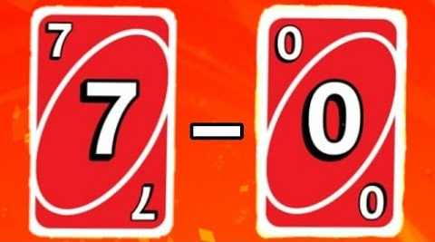
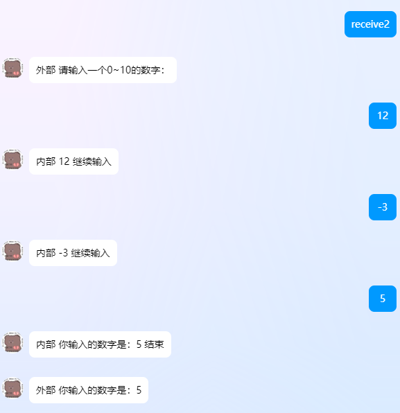
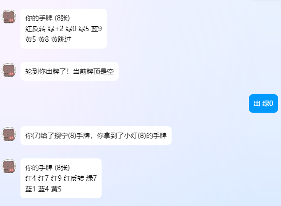
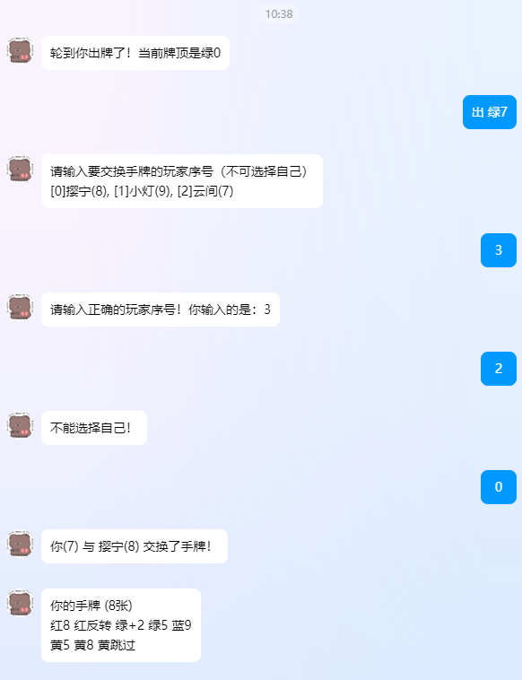

UNO游戏设计（V）：7-0规则
大洗牌
为了测试方便，也为应对突发情况，可以在群聊中发送“大洗牌”让一切重置。不同于直接结束，大洗牌仍然保留加入游戏的玩家信息，牌局也依然存在。
reset_game = on_command("大洗牌")
@reset_game.handle()
async def reset_game_handle(bot: Bot, event: GroupMessageEvent):
group_id = event.group_id
game = games.get(group_id)
if not game or not game.game_started:
await bot.send(event, "本群没有正在进行的UNO游戏！")
return
game.hands = {}
game.initialize_deck()
game.initialize_card()
game.save()
await bot.send(event, "已重新洗牌并发牌！手牌将发送至私聊。")
await send_hand_cards(bot, game)
|
获取群昵称
之前都是获取的QQ昵称，对于基于群聊的游戏来讲，容易混淆。因此改用群昵称：
nickname = event.sender.card or event.sender.nickname
|
后续将改进：如果两人群昵称起得相仿，会加入个人昵称或者标号来区分。现在暂时不考虑这个问题。
7-0规则

7-0规则
重新叙述一下7-0规则：
- 当一名玩家打出数字牌7时，必须选择一名其他玩家，与其交换手牌（此时全场玩家需亮出自己持有手牌的数量以供该玩家判断）；
- 当一名玩家打出数字牌0时，所有玩家将手牌按照当前顺序交给下家。
异步函数等待机制的实现
相比传统的轮询方式（while循环），使用Event对象能够实现更优雅的异步等待机制。我们以一个例子说明：
- 用户发送"receive2"命令触发交互
- 机器人要求输入0-10之间的数字
- 如果输入不符合要求，继续输入，直到结果符合要求为止
- 程序返回结果
from nonebot import on_command, on_message
from nonebot.adapters.onebot.v11 import Bot, PrivateMessageEvent, Message
from nonebot.params import CommandArg
from nonebot.typing import T_State
import asyncio
receive_number_2 = on_command("receive2")
number = 0
@receive_number_2.handle()
async def _(event: PrivateMessageEvent, state: T_State, args: Message = CommandArg()):
global number
wait_event=asyncio.Event()
user_id = event.user_id
await receive_number_2.send("外部 请输入一个0~10的数字：")
receive_number = on_message(temp=True)
@receive_number.handle()
async def handle_first_receive(bot: Bot, event: PrivateMessageEvent, state: T_State):
global number
T=event.get_plaintext()
if T.isdigit() and 0 <= int(T) <= 10:
await receive_number.send(f"内部 你输入的数字是：{T} 结束")
number = int(T)
wait_event.set()
return
await receive_number.reject(f"内部 {T} 继续输入")
await wait_event.wait()
await receive_number_2.send(f"外部 你输入的数字是：{number}")
|
这段代码被注释的部分是轮询机制，即每隔一个短时间检验变量是否符合要求，如果符合则继续外部进程。但是这样做比较耗费资源，因此预先定义一个Event，再通过set()和wait()实现等待机制，只有当内部任务完成时外部任务才可继续。
- 触发阶段
- 用户发送
receive2命令
- 机器人创建异步等待事件
- 发送提示消息要求输入数字
- 输入处理阶段
- 创建临时消息处理器监听用户输入
- 检查输入是否为0-10之间的数字
- 若输入有效：
- 若输入无效：
- 完成阶段
- 等待事件完成后
- 发送最终确认消息，显示用户输入的数字
下图展现了这个测试小程序的效果：

等待的异步函数
将这个原理运用到7-0规则的实现上，可以将相对复杂的询问流程简化。同时，实现了这一点后，后续的变色牌和最为棘手的+4牌的逻辑也可轻松解决。
7-0规则中的0规则相对简单，只需要每家交换给顺序的下家即可，不需要有询问的流程，但却能提供一个很好的框架。因此先从0的规则开始：
0的规则
0的规则表述为：当一名玩家打出数字牌0时，所有玩家将手牌按照当前顺序交给下家。
if card[1:] == '0':
old_hands = [copy.deepcopy(game.hands[i]) for i in range(len(game.playerids))]
for i in range(len(game.playerids)):
next_index = (i + game.direction) % len(game.playerids)
prev_index = (i - game.direction) % len(game.playerids)
await bot.send_private_msg(
user_id=game.playerids[i],
message=f"你({len(old_hands[i])})给了{game.players[next_index]}({len(old_hands[next_index])})手牌，你拿到了{game.players[prev_index]}({len(old_hands[prev_index])})的手牌"
)
time.sleep(0.2)
for i in range(len(game.playerids)):
next_index = (i + game.direction) % len(game.playerids)
game.hands[next_index] = old_hands[i]
await bot.send_group_msg(group_id=group_id, message="所有玩家的手牌已按照当前顺序交给下家！")
time.sleep(0.2)
await send_hand_cards(bot, game)
|
7的规则
7的规则表述为：当一名玩家打出数字牌7时，必须选择一名其他玩家，与其交换手牌（此时全场玩家需亮出自己持有手牌的数量以供该玩家判断）。其中全场持有手牌的数量可以借由之前的房间信息中的一项给出：
players_hands = ', '.join([f"[{i}]{player}({len(game.hands[i])})" for i, player in enumerate(game.players)])
|
因此问题主要聚焦于选择玩家的互动过程。
last_index = game.playerids.index(user_id)
elif card[1:] == '7':
if len(game.playerids) == 2:
other_player_index = 1 - last_index
await bot.send_private_msg(user_id=game.playerids[last_index], message=f"你({len(game.hands[last_index])}) 与 {game.players[other_player_index]}({len(game.hands[other_player_index])}) 交换了手牌！")
await bot.send_private_msg(user_id=game.playerids[other_player_index], message=f"你({len(game.hands[other_player_index])}) 被 {nickname}({len(game.hands[last_index])}) 交换了手牌！")
game.hands[last_index], game.hands[other_player_index] = copy.deepcopy(game.hands[other_player_index]), copy.deepcopy(game.hands[last_index])
await bot.send_group_msg(
group_id=group_id,
message=f"仅有两位玩家，{nickname}({len(game.hands[last_index])}) 与 {game.players[other_player_index]}({len(game.hands[other_player_index])}) 交换了手牌！"
)
await send_hand_cards(bot, game)
time.sleep(0.2)
else:
await bot.send_private_msg(
user_id=game.playerids[last_index],
message=f"请输入要交换手牌的玩家序号（不可选择自己）\n{players_hands}"
)
wait_event=asyncio.Event()
global chosen_player_index
chosen_player_index = -1
receive_number = on_message(temp=True)
@receive_number.handle()
async def _(bot: Bot, event: PrivateMessageEvent, state: T_State, game=game):
T=event.get_plaintext()
if T.isdigit() and 0 <= int(T) < len(game.playerids):
global chosen_player_index
chosen_player_index = int(T)
if int(T) == last_index:
await receive_number.reject("不能选择自己！")
wait_event.set()
return
await receive_number.reject(f"请输入正确的玩家序号！你输入的是：{T}")
await wait_event.wait()
other_player_index = chosen_player_index
await bot.send_private_msg(user_id=game.playerids[last_index], message=f"你({len(game.hands[last_index])}) 与 {game.players[other_player_index]}({len(game.hands[other_player_index])}) 交换了手牌！")
await bot.send_private_msg(user_id=game.playerids[other_player_index], message=f"你({len(game.hands[other_player_index])}) 被 {nickname}({len(game.hands[last_index])}) 交换了手牌！")
game.hands[last_index], game.hands[other_player_index] = copy.deepcopy(game.hands[other_player_index]), copy.deepcopy(game.hands[last_index])
await bot.send_group_msg(group_id=group_id, message=f"{nickname}({len(game.hands[last_index])}) 与 {game.players[other_player_index]}({len(game.hands[other_player_index])}) 交换了手牌！")
time.sleep(0.2)
await send_hand_cards(bot, game, user_id=game.playerids[last_index])
time.sleep(0.2)
await send_hand_cards(bot, game, user_id=game.playerids[other_player_index])
|
测试

出0牌之后

出7牌之后